Disciplinas
VERIFICAÇÃO, VALIDAÇÃO E TESTE DE SOFTWARE. Concluído
Materiais
[UFMS Digital] Verificação, Validação e Teste de Software - Módulo 2 - Unidade 2
Prof° ministrante: Leonardo Souza Silva.
Em nossa última aula.
- Teste é o processo de executar um programa com a intenção de encontrar erros;
- Compreendemos o processo e as fases do Teste de Software;
- Importância dos Casos de Teste e dos requisitos.
Casos de Uso.
- UML — Unified Modeling Language (1997);
- Linguagem de Modelagem Unificada;
- Família de notação gráficas que apoia a descrição e o projeto de sistemas de software;
- Nasce da unificação de muitas linguagens gráficas de modelagem orientadas a objeto;
- Controlado pela OMG (Object Management Group).
- Técnica para captação de requisitos funcionais de um sistema;
- Narram a maneira como o sistema é utilizado;
- Representam uma funcionalidade que deverá ser assistida pelo sistema em desenvolvimento;
- Funcionalidade ≠ Função;
- Compõem o Diagrama de Casos de Uso;
- Diagrama comportamental.
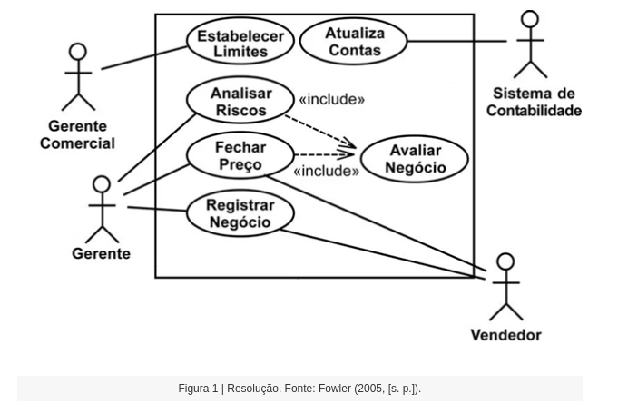
...
- A UML não define a forma para escrever o conteúdo de um caso de uso;
- Cenário principal de sucesso é um dos estilos mais comum para registro do conteúdo de um caso de uso;
- Sequência de passos (numerados) descrevendo do usuário e o sistema ou ambiente a ser modelado;
- Passo → declaração simples, sinaliza quem executa a ação;
- Passo deve mostrar a intenção do ator e não os mecanismos.
- Ator Principal normalmente é aquele cujo objetivo o caso de uso busca satisfazer;
- Demais atores são chamados de atores secundários;
- Cenários alternativos podem ser descritos como extensões.
- Apoiam o entendimento dos requisitos funcionais;
- Não possuem relação direta com as classes do sistema;
- Representam a visão externa;
- Mostram a interação entre os papéis desempenhados pelo usuário e o sistema.
Casos de Uso — Documentação.
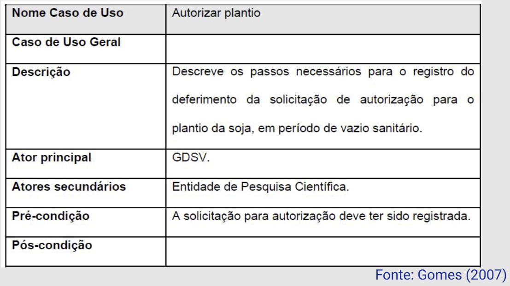
...
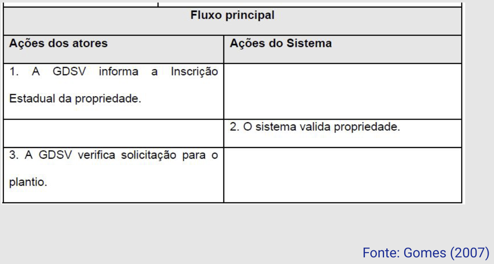
...
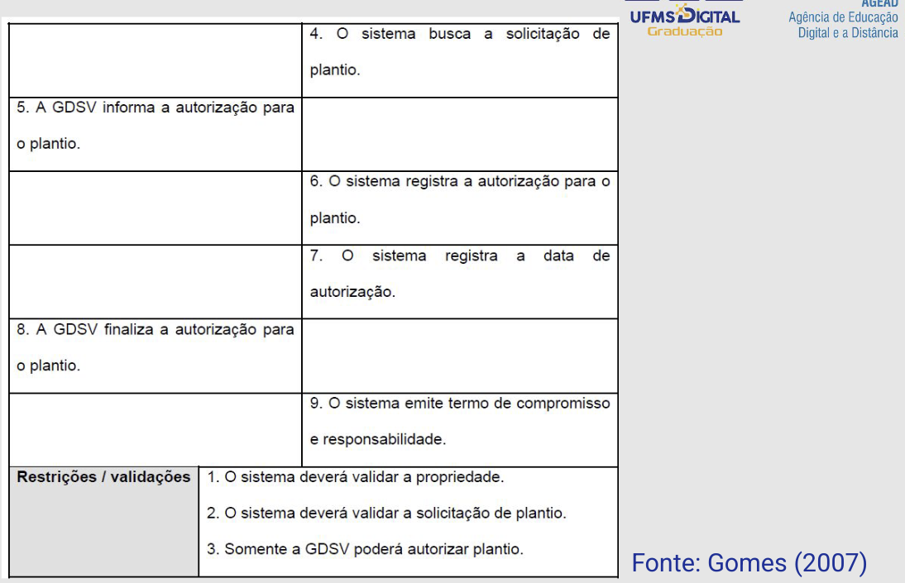
...
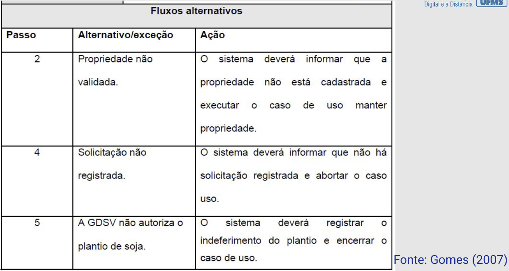
...
Vamos praticar? Casos de Uso — Cantina- Estratégia
- Identificar Cenários;
- Coisas, eventos, que acontecem no domínio da aplicação;
- Descrever os Roteiros;
- Descrever as ações desenroladas no cenário;
- Identificar os Casos de Uso;
- Identificar onde o sistema pode auxiliar.
Pessoas fazendo um pedido, e Pessoas pagando o pedido (consumo).
- Pessoas fazendo um pedido;
- Cliente chega à cantina;
- Atendente verifica os produtos;
- Atendente mostra os produtos;
- Cliente escolhe o produto;
- Atendente entrega o produto;
- Atendente registra o pedido.
- Pessoas pagando o produto (consumo);
- Cliente chega ao caixa;
- Caixa verifica o pedido;
- Caixa totaliza o pedido;
- Cliente paga o pedido;
- Caixa registra o pagamento.
- Buscar Produto (1a, 1b);
- Registrar Pedido (1f);
- Buscar Pedido (2b);
- Totalizar Pedido (2c);
- Pagar Pedido (2e).
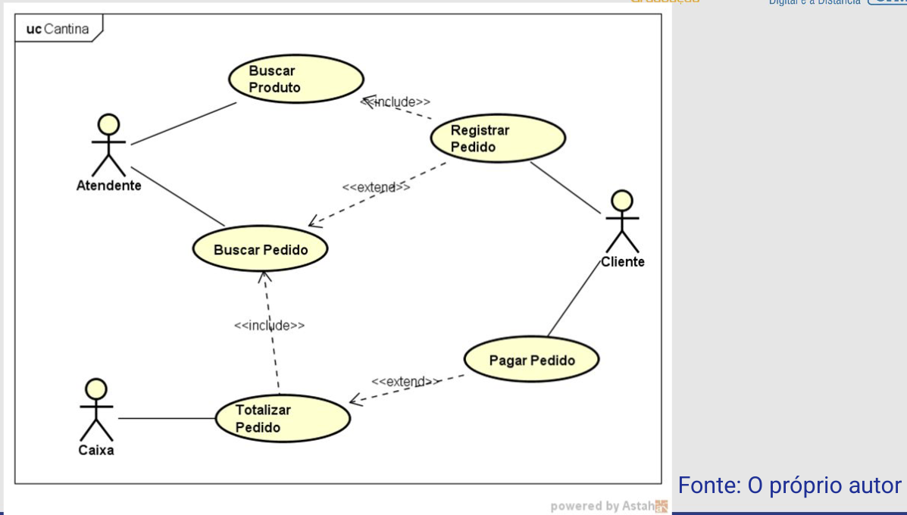
...
Derivando Casos de Teste.
- Cenários desenvolvidos podem ser usados para derivar Casos de Teste.
- Particionamento em classes de equivalência;
- Análise do valor limite;
- Documento de Requisitos também pode apoiar o processo.
- Estratégia:
- Identificar as condições de entrada do caso de uso;
- Identificar os cenários;
- Para cada cenário desenvolver casos de teste;
- Adicionar valores para os casos de teste.
Exemplo
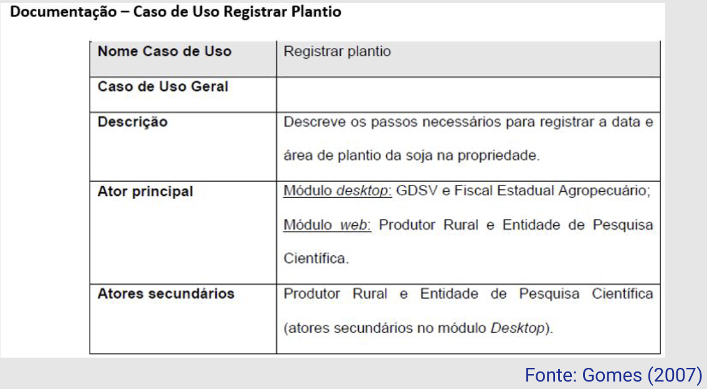
...
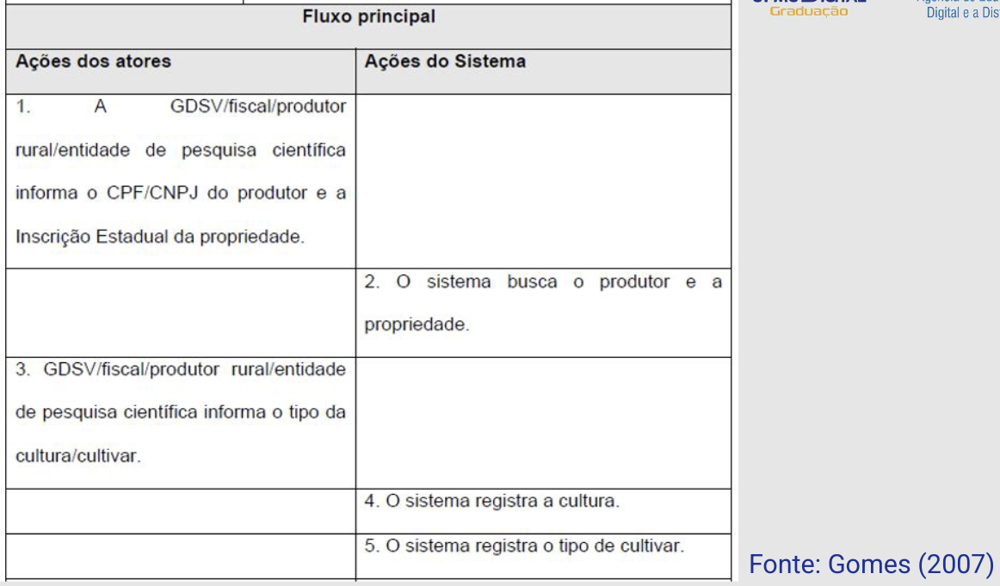
...
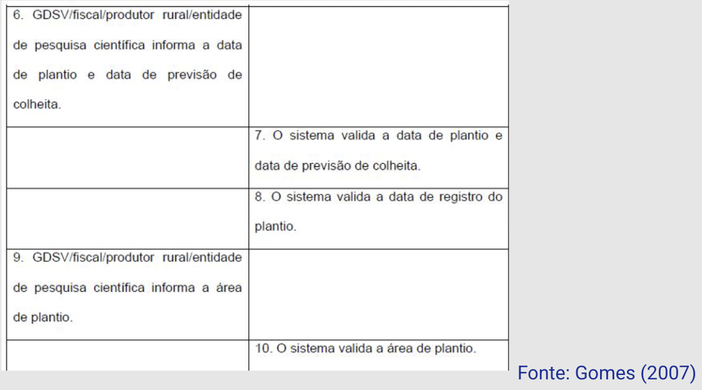
...
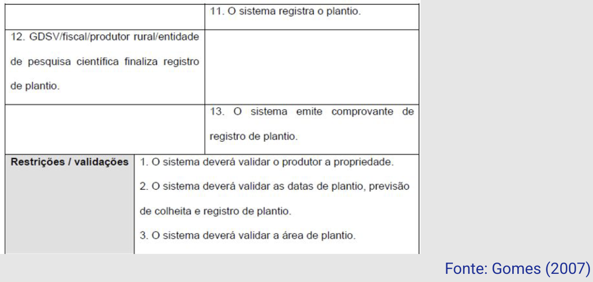
...
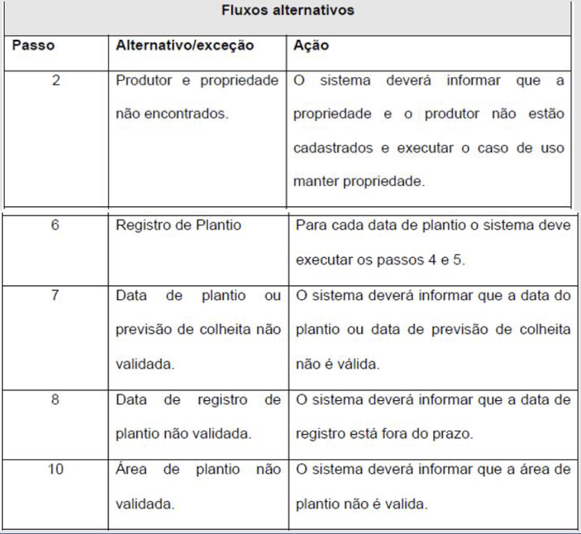
...
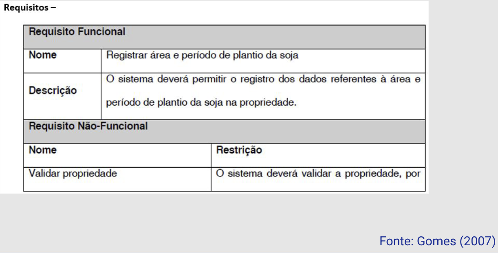
...
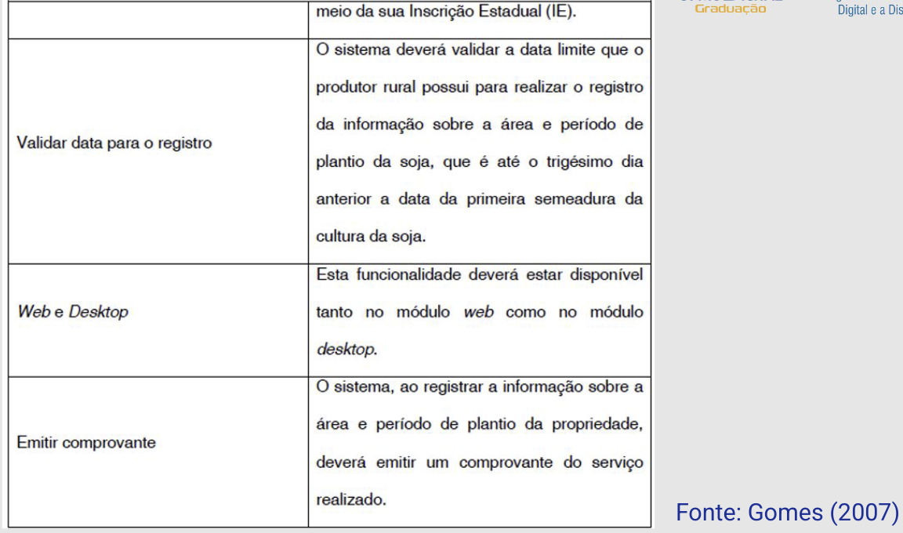
...
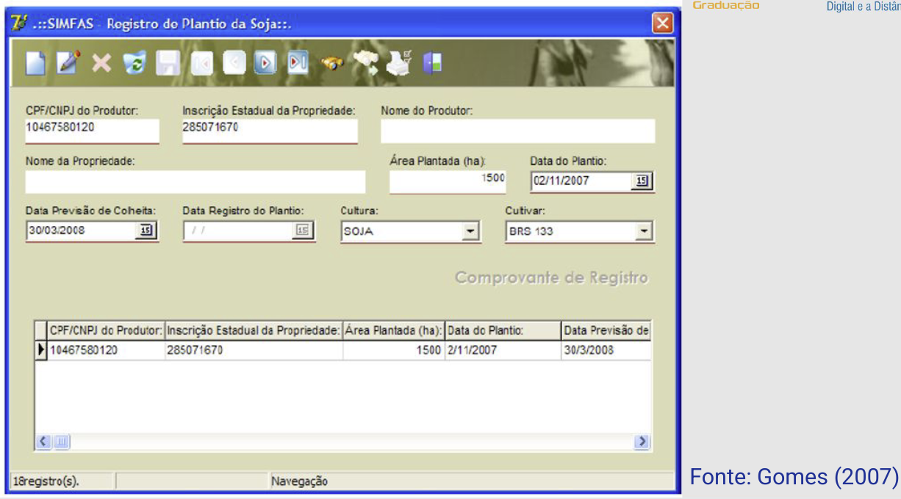
...
Exemplo — Derivando Casos de Teste- Há indicação das seguintes validações:
- Produtor;
- Válido → produtor cadastrado;
- Inválido → produtor não cadastrado;
- Data do Plantio e Previsão de Colheita;
- Válido → Plantio < Colheita;
- Inválido → Plantio ≥ Colheita;
- Data de Registro, e
- Válido → registro ≤ data limite;
- Inválido → registro > data limite;
- Área de Plantio.
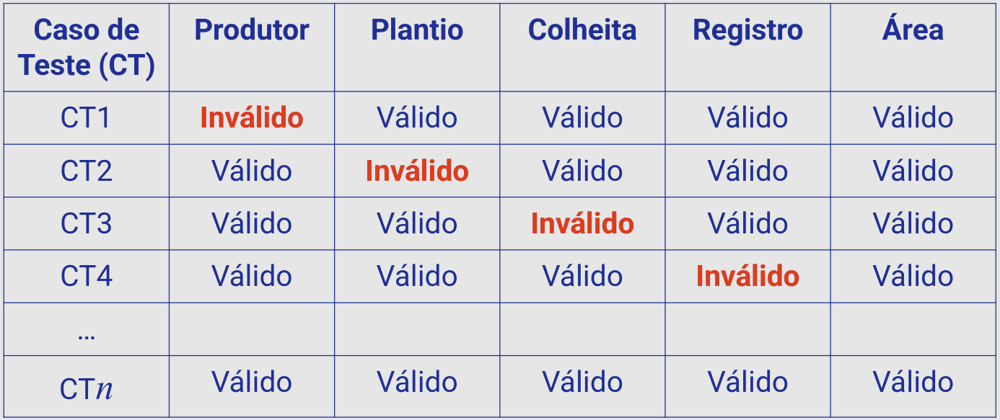
...
Nesta aula...
- Entendemos a função dos Casos de Uso;
- Importância do registro do conteúdo dos casos de uso;
- Compreendemos como podemos derivar Casos de Teste a partir dos Casos de Uso.